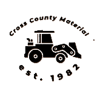
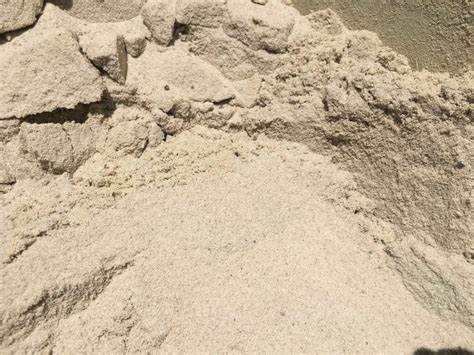
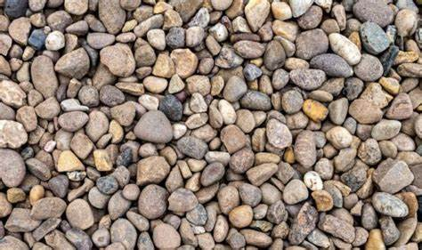
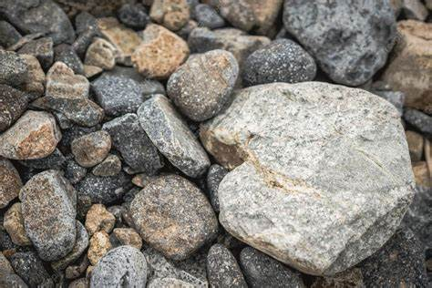
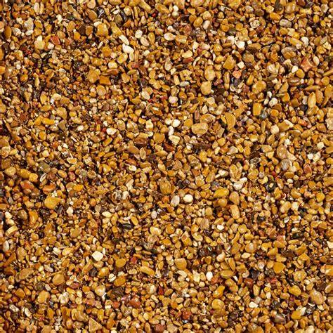
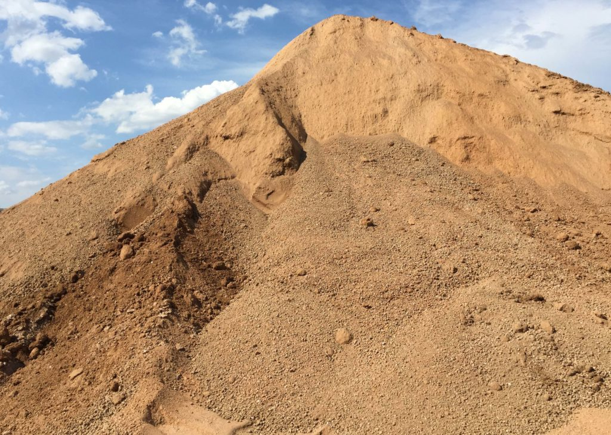
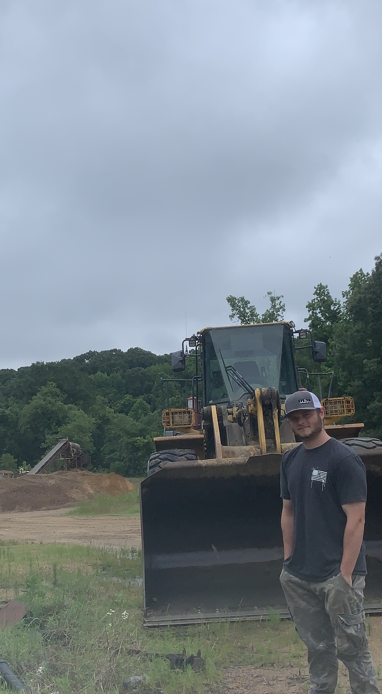

We provide high-quality materials and dependable hauling for your residential or commercial projects. Below you'll find our core offerings and service options.

Finest Sand in the delta. Harvested from gravel off the Ridge and refined in our sandscrew, our sand can be used for any of your needs.
Price: $8.00/Yard

Washed and sorted by our heavy machinery, our medium-sized rock can be used for just about anything. 2-3 inch Cross County Stone straight from the shaker.
Price: $12.00/Yard

Looking for something a bit more robust? Oversized rock is fine 4-5 inch stone that can cater to all your needs.
Price: $9.00/Yard

Finer and smaller, for more delicate landscaping.
Price: $12.00/Yard

Want to do it yourself? We can give you the raw materials. Unrefined pure Arkansan gravel.
Price: $11.00/Yard

Need it brought to you? No problem, we'll load er' up, drop a gear and dissapear.
Price: $25.00/Mile